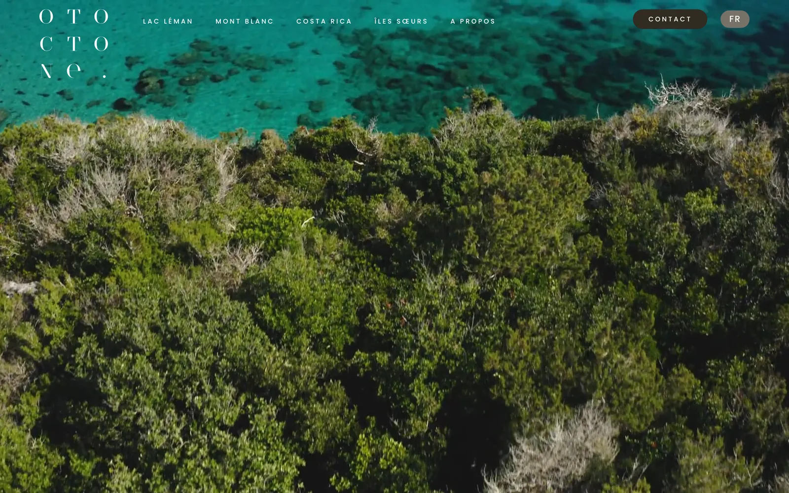
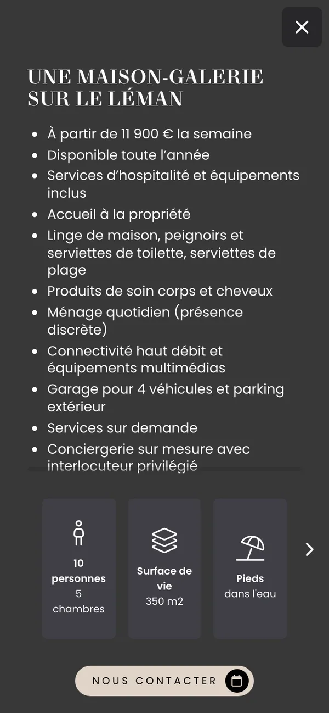

Otoctone
Nouveau style pour le site d'Otoctone, une collection de lieux de séjour d'exception (villa au bord du lac Léman, chalet au Mont-Blanc, maison au Costa Rica, catamaran en Méditerranée).


Changer le style d'un site existant
Les pages du site sont construites dans un back-office, à partir de blocs de contenu (texte, images, chiffres clés, FAQ, avis…) que le client assemble lui-même.
Ma mission, en freelance pour l'agence qui développe le site : changer le style des pages existantes (en-tête, pied de page, blocs, pages destination, contact), sur ordinateur et mobile, de juillet à octobre 2025, jusqu'aux derniers retours du client.
Le nouveau style du site
- 07.2025Navigation : menu, sous-menu, sélecteur de langue, en-tête mobile et pied de page.
- 07.2025Blocs de contenu : titres et liens, multimédia, partenaires, chiffres clés, avis, listes.
- 07.2025Pages destination : en-tête en parallaxe et panneau « En savoir plus » (HTML, CSS et un contrôleur Stimulus.js).
- 07.2025En-tête au défilement : il disparaît quand on descend et réapparaît quand on remonte.
- 09.2025Accueil : vidéo en plein écran, bouton « En savoir plus » qui suit le défilement.
- 10.2025Retours du client : page contact, FAQ, cartes, menu mobile, transitions.
Quelques écrans
Captures du site en ligne (novembre 2026). Cliquez sur une capture pour l'agrandir.
Les interactions
- Accueil : l'en-tête s'efface quand on descend
- Page destination : la photo défile plus lentement que le titre (parallaxe)
- Page destination : le panneau « En savoir plus » s'ouvre sur le côté



Sur mobile : le menu, une page destination, le panneau « En savoir plus » et le contact
Entrer dans le code des autres
Sur Otoctone, je suis arrivée sur un site déjà construit par d'autres développeurs. Il fallait d'abord comprendre leur code et leur organisation (blocs, gabarits, styles) pour changer le style sans rien casser. C'est une situation que je connais bien : reprendre un projet existant et le faire évoluer.
Comme le client compose lui-même ses pages avec les blocs, chaque style devait fonctionner quel que soit l'ordre des blocs et la longueur des textes.